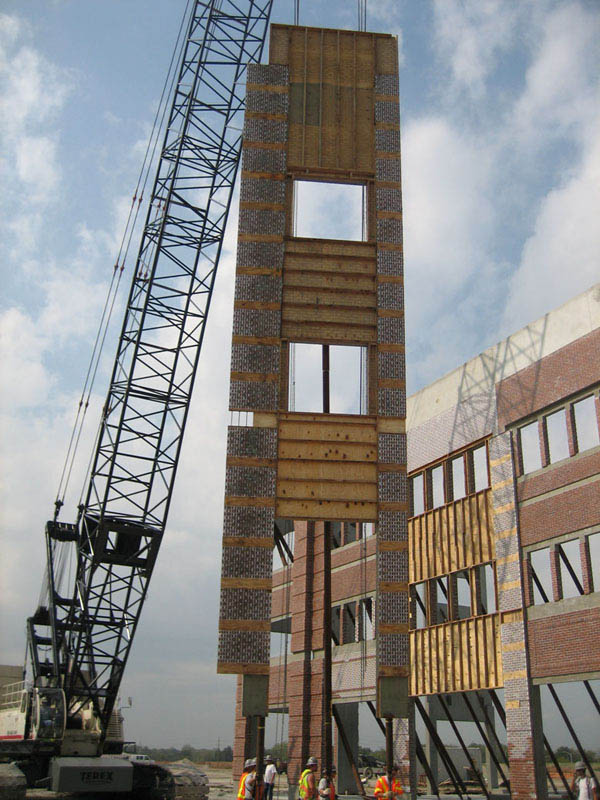

<div class="content">
 <div id="largeLeft">
  <h1>
   Tilt-Up Construction
  </h1>
  <p>The tilt-up construction process can be the fastest and most cost-efficient building method for many construction projects, saving 7-9% of the total building cost.</p>
  <p>Meyer Brothers Building Company is the region's tilt-up experts. In fact, our tilt-up work is recognized around the nation for quality and design.</p>
    <p>Our membership with the <a href="http://www.consteel.com" target="_blank">Con/Steel</a>
     Network of builders allows us to call upon many more resources and engineers than conventional general contractors. We have had this relationship with <a href="http://www.consteel.com" target="_blank">Con/Steel</a> since 1987.</p>
   <a href="../Images/construction/ZR-C-100407-46.jpg">
    
   </a>
 </div>
</div>
